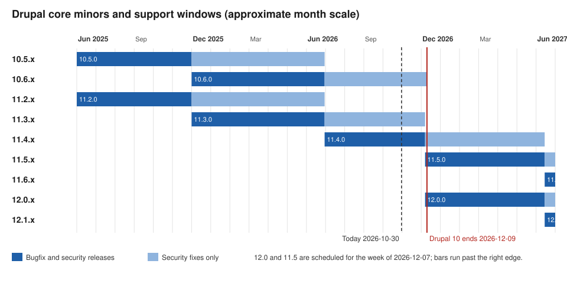

Drupal Versions, Release Cycle and Support
|
This content was generated with the assistance of AI and should be verified against the official documentation before being relied on in production. |
Every Drupal decision, from "which version do I install?" to "when must I upgrade?", depends on the release cycle. This page explains how core versions are numbered, when releases appear, how long each one is supported, how deprecated code disappears, and where to read about every change. It was checked on 2026-10-30 against Drupal 11.4.x (11.4.11 is the latest patch release of its branch), the scheduled 11.5 and 12.0 releases, Drush 13 and 14, and PHP 8.3 or later. Dates written as "scheduled" or "planned" are plans, not facts: Drupal 12.0.0 and the end of life of Drupal 10 are still in the future on that date.
The running example is the Meridian Museum: a site with a custom module meridian_collection, a theme meridian and
a recipe meridian_events. Its maintainers need to know which core minor to track and when their code must stop using
deprecated APIs.
Semantic versioning in Drupal
Since Drupal 8.0.0 (released on 2015-11-19) core uses semantic versioning in the form major.minor.patch. Earlier
branches (6.x and 7.x) used the same digits but with a different meaning: the "minor" was a whole new version in
practice and upgrades between majors meant a full migration.
| Part | What it may contain | Cadence |
|---|---|---|
Patch ( |
Bug fixes and security fixes that are not disruptive. No new features, no API removals. |
Monthly, in the bugfix and security windows described below. |
Minor ( |
New features, new APIs, deprecations of older APIs, dependency updates, and changes to supported PHP or database versions that the policy allows in a minor. |
About every six months, in June and December. |
Major ( |
Removal of everything that was deprecated, and a jump in platform requirements (PHP, Symfony, database versions). |
About every two years, usually in an even year. |
Practical consequences for the Meridian site:
-
A patch update (
11.4.10to11.4.11) is the routine path and should be applied as soon as it is released when it is a security release. -
A minor update (
11.3.xto11.4.x) can change behaviour. It is applied as a planned task with a staging environment, a configuration export and the test suite. -
A major update (
11.xto12.0) is not a migration: the policy below ("continuous upgrades") makes it an update from the last minors of the previous major.
Older books such as Drupal 10 Development Cookbook (2023) and Drupal 10 Masterclass (2023) were written for Drupal 10.0 and 10.1. They describe Drupal 11 as a future release and Drupal 7 as still supported; both statements are outdated. Drupal 11.0.0 was released on 2024-08-02, and Drupal 7 reached end of life on 2025-01-05.
The six-month minor cadence
A new minor appears about every six months, in June and December. Each minor goes through alpha, beta and release candidate phases, each lasting about two weeks for a minor (the first alpha comes about six weeks before the release). A new major has longer phases: the beta lasts about two months and the release candidate about one month, and the alpha starts once the platform requirements and the Symfony dependency have been updated.
An important detail of the cadence is that two branches ship at the same time. When a new major is prepared, the last minor of the previous major and the first minor of the new major are released in the same week. That is why Drupal 11.0.0 and 10.3.0 shipped together on 2024-08-02, and why Drupal 12.0.0 and 11.5.0 are scheduled for the same week in December 2026. Both lines contain the same public API; the new major simply no longer contains the code that was scheduled for removal.
Off-schedule minors exist but are rare. They are used only when a fix is too disruptive for a patch release and cannot wait for the next scheduled minor.
Release windows: bugfix and security
Patch releases do not appear at random. Core publishes them inside fixed windows so that site owners, hosting providers and distribution maintainers can plan.
| Window | When | Notes |
|---|---|---|
Bugfix |
A full week starting Monday (UTC), usually containing the first Wednesday of the month. |
Commits to the branch are at the committers' discretion, and a commit freeze usually starts at 12:00 UTC on Tuesday. The window can be adjusted. |
Security |
Usually the third Wednesday of the month, at 12:00 America/New York. |
Not every security window contains a core release, but sites should be ready to update. Security releases can happen outside the window after a public service announcement. |
Contributed projects do not publish security releases in the week a new core minor or major ships, so that the security team does not release against a moving target. For the Meridian site this means: subscribe to the security announcements, keep a person on call for the third Wednesday of every month, and apply the update the same day when core or a used module has an advisory. The practical workflow for applying updates is in Updates, Composer and Security Advisories.
Which minors receive security fixes
A minor receives bug fixes and security fixes for roughly its first six months, and security fixes only for the next six months, so a minor lives for about a year. Because a new minor appears every six months, at any moment the current minor and the previous minor are covered, plus the last minor of the previous major, which receives security fixes as part of the previous major’s remaining support.
On 2026-10-30 the monthly security window covers Drupal 11.4.x, 11.3.x and 10.6.x. The schedule publishes these transitions:
-
The week of 2026-06-29: Drupal 11.4.0 is released. Security support ends for 11.2.x and 10.5.x.
-
The week of 2026-12-07: Drupal 12.0.0 and 11.5.0 are released. Security support ends for 11.3.x and 10.6.x.
The consequence is that a site on 11.3.x has to move to 11.4.x or 11.5.x before December 2026, and a site on Drupal 10 has to be on 11.3 or later before the end of Drupal 10. Staying on an uncovered minor means that security advisories will be published, but no fixed release will exist for your branch.
The figure shows the support windows of the minors that matter in 2026 and 2027. Bars are drawn on an approximate month scale from the release month.

LTS and end-of-life dates
Drupal does not sell or publish a separate "LTS" branch. Long-term support is built into the cycle in two ways:
-
A major is supported for at least four years, until two further majors have been released and as long as its key dependencies are supported.
-
When a new major is released, the previous major gets a maintenance minor with the same API as the new major (such as 10.3 next to 11.0, or 10.6 for Drupal 10’s last year). During this phase Drupal uses an LTS version of Symfony. A maintenance minor is released about every six months, and its scope shrinks as the major approaches the end of life: it contains security updates, certain bug fixes, forward-compatibility additions and dependency updates, and it skips the alpha phase.
The end-of-life dates published in the core schedule are:
| Version | End of life | Details |
|---|---|---|
Drupal 6 |
2016-02-24 |
Ended. |
Drupal 7 |
2025-01-05 |
Support ended. Sites remaining on Drupal 7 need a migration plan; see Migrating from Drupal 7. |
Drupal 8 |
2021-11-17 |
Ended. |
Drupal 9 |
2023-11-01 |
Ended. |
Drupal 10 |
2026-12-09 (scheduled) |
10.6 is the last minor, and no Drupal 10 releases are made after that date. The date falls in the same week as Drupal 12.0.0. |
The schedule lists no end-of-life date yet for Drupal 11 or Drupal 12. Drupal 10 ends in December 2026 regardless of when Drupal 12 actually ships. The practical rule is simple: do not start a new site on Drupal 10, and move existing sites to Drupal 11.3 or later. The step-by-step path is in Upgrading from Drupal 10 to 11.
Hosting providers and third-party vendors sometimes offer paid extended support for end-of-life versions, notably for Drupal 7. That is a commercial offer outside the project’s security team; the community security team does not publish advisories or fixes for an end-of-life branch.
The 11.4, 11.5 and 12.0 schedule
The following dates come from the core schedule as of 2026-10-30 (all in UTC weeks).
| Week of | Milestone |
|---|---|
2026-06-29 |
Drupal 11.4.0 released. Security support ends for 11.2.x and 10.5.x. |
2026-09-11 (Friday) |
Drupal 12 beta requirements must be complete. |
2026-09-14 |
Drupal 12.0.0-beta1 and 11.5.0-beta1 scheduled. |
2026-11-09 |
Drupal 12.0.0-rc1 and 11.5.0-rc1. |
2026-12-07 |
Drupal 12.0.0 and 11.5.0. Security support ends for 11.3.x and 10.6.x. The end of Drupal 10 follows on 2026-12-09. |
2027-05-03 |
Drupal 12.1.0-alpha1 and 11.6.0-alpha1. |
2027-05-17 |
Drupal 12.1.0-beta1 and 11.6.0-beta1. |
2027-05-31 |
Drupal 12.1.0-rc1 and 11.6.0-rc1. |
2027-06-14 |
Drupal 12.1.0 and 11.6.0. |
The schedule has moved before: an earlier target for Drupal 12.0.0 was August 2026, and it slipped because release-critical requirements were not finished. The releases page on 2026-10-30 lists 11.5.0-beta1 and 12.0.0-beta2 as the newest pre-releases, so check the schedule page again before planning around a date.
What changes for the Meridian site:
-
Before 2026-12-07: be on 11.3.x or 11.4.x, with
meridian_collectiondeclaring compatibility with the versions it was tested against. -
Drupal 12.0.0: requires PHP 8.5 (with argon2 support) and Symfony 8. The requirements page and the 12.0.0-beta1 notes disagree on some database minimums (MariaDB 10.11 and PostgreSQL 18 or 19 are mentioned); read both and treat the final release notes as authoritative. Drupal 12 refuses to upgrade from 11.2 or earlier, so start from 11.3 or later, with 11.4 or 11.5 recommended.
-
Removals: Drupal 12 moves Ban, Contact, Field Layout, History, Search, Settings Tray, Shortcut, Telephone and Toolbar to contrib, removes the Claro, Olivero and Stable 9 themes (the Default Admin theme, based on Gin, becomes the admin theme) and removes the Migrate Drupal modules without a contrib move. The details are in Preparing for Drupal 12 and Removed Core Modules and Replacements.
Deprecation policy and continuous upgrades
Drupal core promises that code that works on the last minor of a major without deprecation warnings will work on the next major. The mechanism is the continuous upgrade path, in place since the Drupal 8 to 9 upgrade:
-
A better API is introduced in a minor release, and the old one is marked
@deprecatedwith the version in which it was deprecated and the major in which it will be removed. Core also triggers a runtimeE_USER_DEPRECATEDnotice. -
The old API keeps working for the rest of that major, so a site can adapt gradually across several minors.
-
The next major removes the deprecated code. It therefore has the same public API as the last minor of the previous major, minus the removed code.
The format that core uses for the deprecation message is a good model for custom code too. In the Meridian module, a helper that was replaced by a service would be deprecated like this:
<?php
namespace Drupal\meridian_collection;
/**
* Formats an accession number for display.
*
* @deprecated in meridian_collection:1.3.0 and is removed from
* meridian_collection:2.0.0. Use the meridian_collection.accession_formatter
* service instead.
*
* @see https://example.com/meridian/changes/accession-formatter
*/
function meridian_collection_format_accession(string $number): string {
@trigger_error('meridian_collection_format_accession() is deprecated in meridian_collection:1.3.0 and is removed from meridian_collection:2.0.0. Use the meridian_collection.accession_formatter service instead. See https://example.com/meridian/changes/accession-formatter', E_USER_DEPRECATED);
return \Drupal::service('meridian_collection.accession_formatter')->format($number);
}Source: Drupal deprecation policy
Points to know about the policy:
-
Version strings use the form
project:major.minor.patch, for exampledrupal:11.3.0. -
A deprecated API is removed in a later major, never in a minor. Interface and abstract-method signature changes take two steps across two majors. Internal APIs do not need full backward compatibility, although core recommends deprecating them first. Test classes are not deprecated.
-
Disruptive deprecations made in Drupal 11.3.x and later are scheduled for removal in Drupal 13.0.0 instead of 12.0.0, so that contributed projects can support Drupal 12 while 10.x and 11.x lines are still supported. Older material that says "deprecated in a minor, removed in the next major" still describes the general rule, but a deprecation made in a recent minor may name 13.0.0 as the removal version. Core modules are not treated as disruptive to deprecate, because a contrib project can take them over.
-
Whole modules and themes are removed in the next major, after their functionality moves into core or into a contributed project. Install the contrib version of a removed module before upgrading, and do not uninstall the module.
Examples of how this played out for pages elsewhere in this sub-section: plugin annotations are replaced by PHP attributes
since 10.2 (annotations still work but are deprecated), hooks became methods with #[Hook] attributes in 11.1, and
Drush 13 removed drush.services.yml. Older books show the annotation and procedural forms; they remain valid code on
many versions but are no longer the recommended style. See
Where Older Books and Tutorials Are Outdated.
Finding deprecated code before the major
The way to stay on the continuous path is to run a deprecation scanner on the last minor of the current major and fix
every report before updating. Tools in the PHP toolchain understand the @deprecated tags: PHPStan with the
mglaman/phpstan-drupal and phpstan/phpstan-deprecation-rules extensions, and Rector with the Drupal rules.
composer require --dev phpstan/phpstan mglaman/phpstan-drupal phpstan/phpstan-deprecation-rules
vendor/bin/phpstan analyse web/modules/custom/meridian_collection web/themes/custom/meridian --level=5Source: Drupal.org: PHPStan
The testing and static analysis pages cover the full setup: Coding Standards and Static Analysis. Remember that a green scan only proves the absence of known deprecated calls; templates, YAML keys and configuration can also be deprecated.
Declaring compatibility in info.yml
Every module, theme and recipe-compatible project declares the core versions it supports in its *.info.yml with
core_version_requirement, a Composer-style constraint. Drupal rejects installing an extension whose constraint does not
match the running core.
name: Meridian Collection
type: module
description: Collection objects, display blocks and the collections API sync for the Meridian Museum.
package: Meridian
core_version_requirement: ^11.3 || ^12The constraint is the reason a module becomes "not compatible with Drupal 12" even when no code needs to change, and the
reason contributed modules publish a release that only widens the constraint. A site that depends on a module that has
not added ^12 cannot run on 12.0.0 with Composer until that release exists. Declare a lower bound that matches the
oldest minor you test against: ^10.3 || ^11 was a common pattern while Drupal 10 was current, and with Drupal 10 at end
of life the useful range for new code is ^11.3 || ^12. The full info.yml reference is in
Module Anatomy and info.yml.
Pinning a core minor with Composer
Projects should pin core to the minor they run and move deliberately. The recommended project template requires
drupal/core-recommended, whose constraint determines which updates composer update can take.
{
"require": {
"php": ">=8.3",
"drupal/core-composer-scaffold": "^11.4",
"drupal/core-recommended": "~11.4.0",
"drush/drush": "^13 || ^14"
}
}With the tilde constraint ~11.4.0 Composer takes patch releases of 11.4 only; changing it to ~11.5.0 is the explicit
minor update. Drush 13 serves Drupal 10.2+ and 11, and Drush 14 serves Drupal 11.3+ and 12, so the Drush constraint
changes with the core minor; install Drush per project with Composer and never rely on a globally installed copy.
Composer is the only supported way to add or update code: uploading modules or themes from the UI was removed in 11.0 and
11.1, and updating from the UI in 11.2. Automatic Updates and Project Browser use the core Package Manager and still need
a writable codebase; Automatic Updates covers patch-level core updates only. See
Automatic Updates and Project Browser.
A typical minor update on the Meridian site, run first on a staging copy:
composer outdated "drupal/*" --direct
composer require "drupal/core-recommended:~11.5.0" "drupal/core-composer-scaffold:~11.5.0" --update-with-all-dependencies
vendor/bin/drush updatedb --yes
vendor/bin/drush config:export --yes
vendor/bin/drush cache:rebuild
vendor/bin/drush statusSource: Drush: updatedb
The Standard installation profile no longer creates the Article and Page content types as of 11.4, so site recipes and
tutorials must create the content types they need; and drupal/legacy-project is abandoned as of 11.4. The
install flow is in Installation with Composer and DDEV.
Drupal CMS versions versus core versions
Drupal CMS is a curated distribution built on Drupal core: a Composer project template that applies recipes, with site templates and a recommended set of contributed modules. It is not a fork. It has its own version numbers, which are not core numbers.
-
Drupal CMS 1.x is unsupported.
-
Drupal CMS 2.0 was released in January 2026 on Drupal core 11.3 and makes Canvas the default page-building experience, with the site templates Byte, Starter (with the Mercury theme) and Blank and an optional AI Assistant.
-
A Drupal CMS 2.x release states in its notes which core minor and which recipes it contains, and updating the project means running
composer updatelike any Drupal site. Recipes have no update path: once applied, the site is ordinary Drupal, and a later release of the CMS template changes only what a new site receives.
The consequence for versions: Drupal CMS support follows core support. A site created from Drupal CMS runs on a core
minor and has to follow the core release windows, security windows and end-of-life dates above; its documentation lives
at project.pages.drupalcode.org/drupal_cms. More in
Drupal CMS and Site Templates and
Recipes.
Following change records and release notes
Staying current is mostly about reading the right feeds.
| Source | Use |
|---|---|
Change records ( |
One record per API change, with the version it applies to, an explanation, and before and after code. Filter by the core version and read the ones tagged for your minor before updating. Deprecation messages link to them. |
Release notes ( |
Each release lists fixed issues and links to the relevant change records. The list also shows the latest patch of every branch and any alpha, beta or release candidate of the upcoming minor and major. |
Core schedule ( |
Release windows, current and next cycle dates, and end-of-life dates. |
Security advisories ( |
Advisories for core and contributed projects, with RSS feeds and a mailing list. Sites should subscribe in addition to the status report. |
Core development blog ( |
Announcements of policy changes, such as the move of disruptive deprecations to 13.0.0. |
Inside the site, the Status report (/admin/reports/status) shows the running core version and warns about missing
updates; drush pm:security lists installed projects with security advisories, and composer audit does the same for
Composer packages.
vendor/bin/drush status --fields=drupal-version,php-version,db-driver
vendor/bin/drush pm:security
composer auditSource: Drush: pm:security
Common errors and pitfalls
-
Starting a new project on Drupal 10. It ends on 2026-12-09. Use the current 11.x minor.
-
Treating "stable" as "supported". A minor that no longer receives security fixes can still be installable by Composer. Check the schedule, not the version number.
-
Waiting for the end-of-life week. The last minors arrive together with the next major; do the minor update first.
-
Skipping from 11.2 or earlier to Drupal 12. Drupal 12 refuses the update. Go to 11.3 or later first.
-
Uninstalling a module that core removed instead of installing its contrib version before the update.
-
Assuming Automatic Updates upgrades minors. It handles patch-level core updates only, not multisite and not unattended cron updates.
-
Following a tutorial for the wrong major. Check the Drupal version in the tutorial’s first section: Backbone, Underscore, CKEditor 4, annotations and
\Drupal::static calls in classes all indicate older material. -
Ignoring security-window timing. Apply security releases the same day; public exploits often appear within hours.